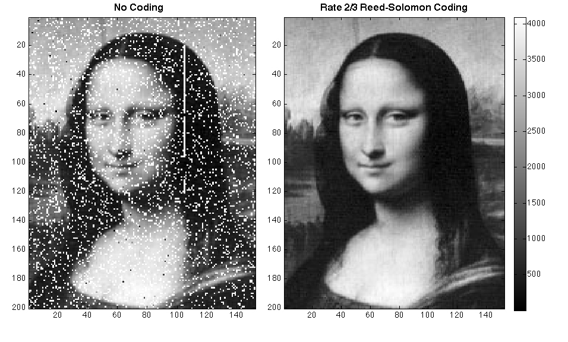

Error correcting codes
How to talk across a noisy room?
Noisy communication channels
Is this working?

Am I muted?

Can you hear me through space?

Can you hear me through the atmosphere?

{kind=link}
Correcting errors
Can we do better?
Yes, we can.
Using number theory!
The strategy
We have a set \(M\) of messages (strings of length \(n\)).
We encode each \(m \in M\) to a longer string \(f(m)\).
So that \(f(m_1)\) and \(f(m_2)\) are not too close if \(m_1 \neq m_2\).
What is “too close”?
Given two strings \(n_1\) and \(n_2\), define the Hamming distance \(d(n_1,n_2)\)between them to be the number of places in which \(n_1\) and \(n_2\) differ.
Not too close = Hamming distance at least \(k\).
Using the strategy
Allows \(\lfloor k/2 \rfloor \) errors to be corrected!
Allows \(\lfloor k/2 \rfloor \) errors to be corrected!
How we execute the strategy?
How do we find an \(f\)?
Using finite fields!
What is a field?
A field \(F\) is a set together with operations \(+\) (addition) and \(\times\) (multiplication) satisfying the familiar rules.
- Addition is associative, commutative, has an identity element (\(0\)).
- Multiplication is associative, commutative, has an identity element (\(1\)).
- Distributive law holds: \(a \times (b+c) = a \times b + a \times c\).
- Every non-zero element has a multiplicative inverse.
Examples
- \(\mathbb Q\) is a field (with the usual \(+, \times\)).
- \(\mathbb R\) is a field (with the usual \(+, \times\)).
Finite fields
Take \(\mathbb F_p = \{0,1,\dots, p-1\}\)
with \(+\) and \(\times\) done modulo \(p\).
Theorem: \(\mathbb F_p\) is a field.
Multiplicative inverses in \(\mathbb F_5\).
\begin{align*} \overline{1}^{-1} &= \overline 1 \\ \overline{2}^{-1} &= \overline 3, \quad \overline{3}^{-1} = \overline 2 \\ \overline{4}^{-1} &= \overline 4 \end{align*}Polynomials
For any field \(F\), let \(F[x]\) denote the set of polynomials with variable \(x\) and coefficients in \(F\).
Example: In \(\mathbb F_5[x]\), we have elements like
\begin{align*} \overline 0,\\ \overline 2 \cdot x + \overline 1, \\ \overline 1 \cdot x^2 + \overline 3 \cdot x + \overline 2. \end{align*}We add and multiply polynomials as usual, but remembering to always use the given operations for \(F\).
For example, in \(\mathbb F_5[x]\), we have \[ (\overline 2 x+ \overline 1) \cdot (\overline 1 x+ \overline 3) = \overline 2 x^2 + \overline 2 x + \overline 3. \]
Zeros of polynomials
Most of the usual properties of polynomials continue to hold.
- If \(p(a) = 0\) then \((x-a)\) divides \(p(x)\); that is, \(p(x) = (x-a) q(x)\) for some \(q(x)\).
- As a result, if \(p(x)\) has degree \(n\), then it has at most \(n\) zeros.
- As a result, if \(p_1(x)\) and \(p_2(x)\) are distinct and have degree at most \(n\), then \(p_1(a) = p_2(a)\) for at most \(n\) values of \(a\).
Reed-Solomon codes
Message space: length-3 strings of \(\{0,1,2,3,4\}\).
Encoding \((p_1, p_2, p_3)\)
- Think of \((p_1,p_2,p_3)\) as the polynomial \(p(x) = p_1 x^2 + p_2 x + p_3\) in \(\mathbb F_5[x]\).
- Encode this polynomial into a length-5 string \((p(0),p(1),p(2),p(3),p(4))\).
- Think of \((p_1,p_2,p_3)\) as the polynomial \(p(x) = p_1 x^2 + p_2 x + p_3\) in \(\mathbb F_5[x]\).
- Encode this polynomial into a length-5 string \((p(0),p(1),p(2),p(3),p(4))\).
Example:
\begin{align*} (1,1,1) &\mapsto {\small (0^2+0+1, 1^1+1+1, 2^2+2+1, 3^2+3+1, 4^2+4+1)} \\ &== (1,3,2,3,1). \end{align*}What is the hamming distance?
What is the Hamming distance of the encodings of \(p\) and \(q\)?
At least 3!
Two distinct polynomials of degree at most 2 must differ in at least 3 out of the 5 values of \(x\) in \(\mathbb F_5\).
Recap
Encode: Length-3 string to length-5 string
Gain: Ability to correct any 1-bit errors.
Better than tripling!
Applications
Reed-Solomon codes (and their more sophisticated analogues) are used in many places!



More questions
- Are there other finite fields, besides \(\mathbb F_p\)?
- Can we do better than Reed-Solomon?